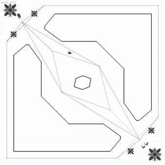
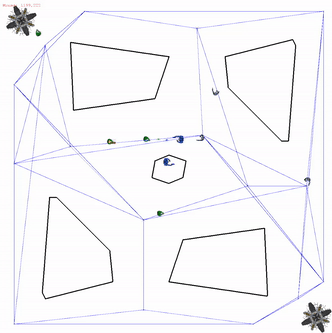
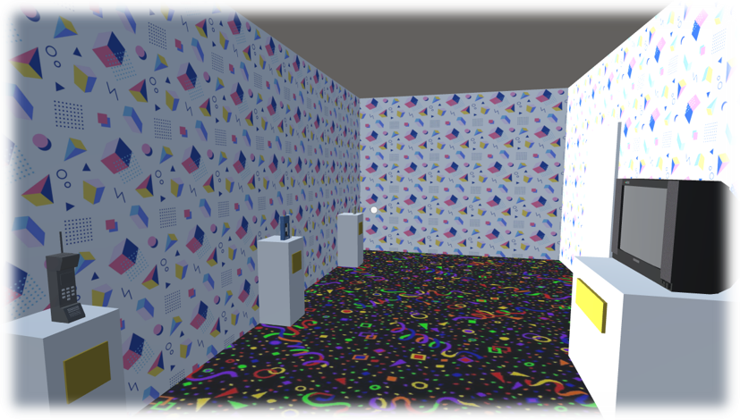
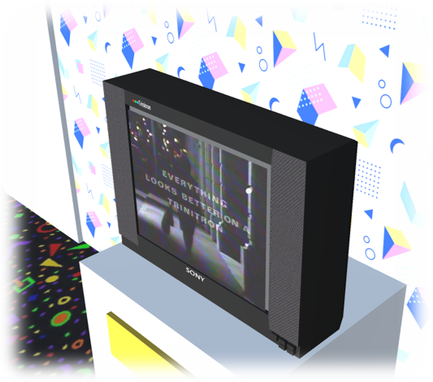
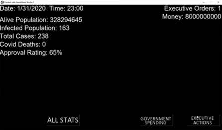
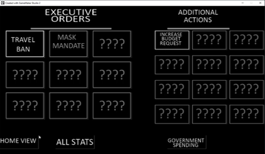
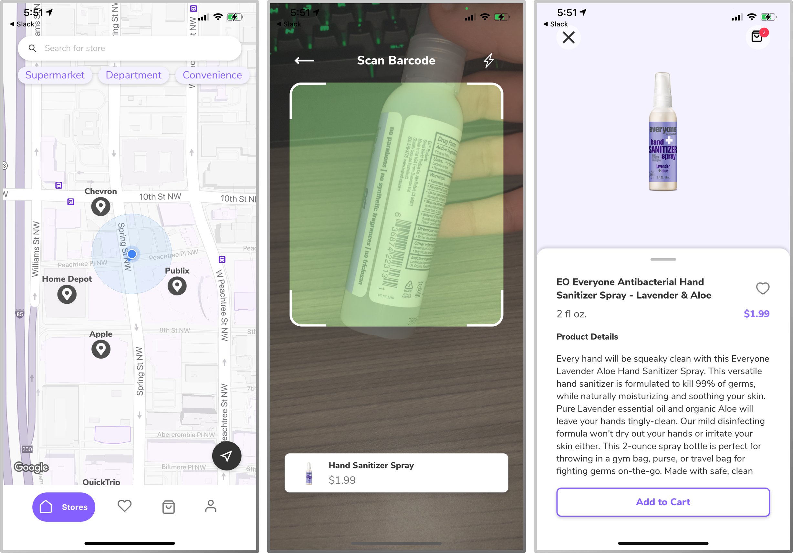
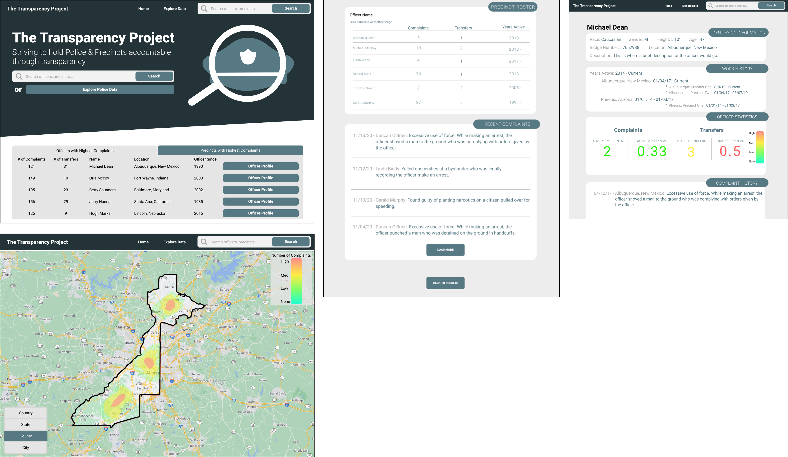

The goal of this project was to calculate the approximate odds of getting a perfect "March Madness"
bracket. The theoretical odds of getting a perfect bracket are ~1 in 9.2 Quintillion.
This is because there are 9.2 quintillion possible ways to fill out a 64 team bracket.
However, since the outcome of each game is not random, an informed individual has significantly better odds of getting a perfect bracket,
but previously no one had ever attempted to calculate the odds of an "informed individual" picking a perfect bracket.
To calculate the odds, I looked at every bracket since 1985, and calcuated the percent of games that were upsets for each seeding match-up given the tournament history.
I then simualted tournaments based on these calculated upset percentages until one was an exact match for a randomly chosen target bracket which was picked from a set of real brackets that happened from 1985-2021.
After repeating this process thousands of times, I used the average number of simulations it took to get a perfect bracket to calculate the approximate odds.
I was able to get the odds to as low as ~1 in 100 Billion which is about 100 million times more likely than the theorectical odds.
***I will soon be posting a video going more in depth about this project.***
Fully Automated YouTube Channels
Type: Python Scripts
Description:
Using AI and automation, I created multiple YouTube channels that are run entirley through automated programs that scrape different social media platforms for content, and then edits the content into one video, and then posts the videos.
The goal of this project was to see if it was possible to create an absolutley passive stream of income through fully automated YouTube channels.
***I have several projects currently in development! Check back later for more updates.***
2021
Path Networks (Game AI)
Type: Python Program.
Individual School Project
Description:
Using a game engine that was created by my professor, I was tasked with creating an algorithm that could draw a path network connecting preditermined path nodes,
the path network was required to allow an AI agennt to traverese the game environment without running into obstacles and reach any point in the environment.
My solution involved drawing lines that connected each node to every other node, and then I erased all the lines that went through an obstacle.
Finite State Machines
and A* Heuristic (Game AI)
Type: Python Program.
Individual School Project

Description:
Using the same game engine as in the above project,
I was tasked with implementing the A* Heuristic Algorithm to allow AI agents to
efficiently navigate an environment using my previously implemented path network setup.
Additionally, I implemnted decision making for the AI agents to attack enemies and an enemy base.
The decision making was implemnted using a Finite State Machine.
Most of my agents (green) will take the shortest path unblocked path to the enemy base while
attacking any enemies that come into range along the way. Once my agents get in range of the enemy turrets,
they will then attack the turrets which need to be destroyed before the base can take damage.
If both turrets are destroyed my agent will then attack the base. Additionally, some of my agents
will stay along the path and near my base to attack any enemies that attempt to reach my base.
Behavior Trees (Game AI)
Type: Python Program.
Individual School Project

Description:
Using the same game engine as in the above projects,
I was tasked with implementing Behavior Trees that would dictate how a special type of AI agent
operates within the game environment. For this assignment, each team in the game had a "Hero" agent
that was more ppowerful than the regular agents. The "Hero" agent had multiple types of attacks,
could dodge bullets, got more powerful with each enemy it eliminated, and could heal at it's own base.
Each team had the same AI controlling the normal minion agents, so the difference in the "Hero" agents AI
would be the only thing that seperates the two teams.
Describing in detail the Behavior Tree I created to control my "Hero" agent would be impossible
to do in a single paragraph, but in short, my agent (green with yellow head) prioritized running directly at the enemies "Hero"
and then retreating to its own base to heal while still firing at the enemy. My implementation was among
the best in the class and was even capable of beating the professor's implementation.
Unity Museum
Type: Unity Project
Group School Project
Total Individual Dev Time:
~12hrs


Description:
For this project, I, along with a group of other students, created a technology museum in Unity.
The museum showed off the different technologies from different decades. We had a room for 2000's, the 2010's, and the 2020's.
Each room showcased popular TVs, computers, gaming consoles, phones, and music players for each decade.
For this project I was responsible for modeling the 2000's room, the Televisions for each decade, and making the TVs interactive.
To model the TVs, I used Maya and then imported the models into Unity. I then implemented
C# code to allow the user to turn on the TV's and change the channels.
Covid 19
Type: Menu Game
Created in GameMaker Studio
Individual School Project
Total Individual Dev Time:
~20hrs


Description:
This was a menu style game that was meant to let the player take the role of President of the
United States during the Covid-19 Pandemic. The goal of the player was to mimize the number of deaths
and infections due to Covid-19. The game incorporated large amounts of real world data to simulate
the pandemic as accuratley as possible. The player had the ability to spend government money,
issue executive orders, and make congressional requests to do several different things that could
potentially impact the pandemic. The player also had an approval rating that would change depending on
how the pandemic was going and the actions they took. The lower the approval rating, the higher the
chances were of the population ignoring their orders, or congress ignoring their requests.
Because the allowed development time for this project was so short, and I already had
to spend much of it doing research, I decided to forgo any attempt at making graphical components,
and just focused on making the simulation aspect of the game as fleshed out as possible. The game was
created using a combonation of GameMaker Studio and Java code.
2020
Mobile Shopping App
Type: React Native Mobile App
Group School Project
Total Dev Time:
~5 Months

Description:
This was my Junior Design project. The purpose of the project was emulate Industry Development
using AGILE/SCRUM methodologies. As a group, we were assigned a client and we're responsible for the
full development of the clients product. Our client wanted to build a mobile app that would allow
in store shoppers to scan items and pay directly from their phone.
For this project I was involved with writing user stories, carrying out user testing, planning development sprints,
UI design, and Front-end development. The UI prototypes were created using Figma and the Front-end Develpment was done using
JavaScript and React Native. I was solely responsible for the Front-end development of multple screens within the app.
The final product was well recieved by both our client and professors. We were also given an award for best design.
Police Transparency Project
Type: UI Prototype
Group School Project

Description:
For this project, my group created a mock website using Figma. We created a protype for the UI,
as well as prototypes for each individual page of the site. I was resposible for the creation of multple
idivual screens.